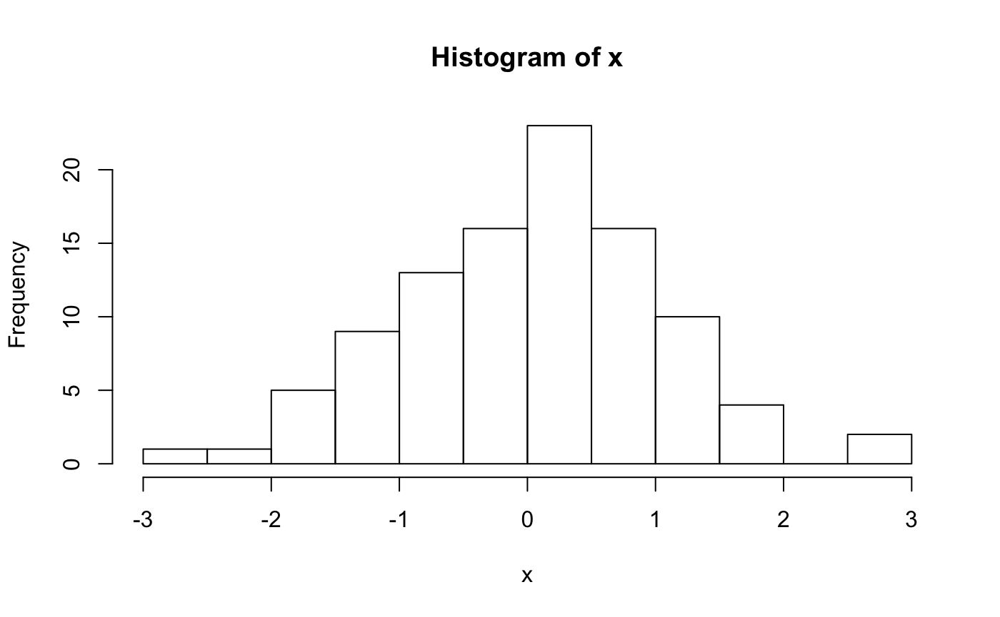
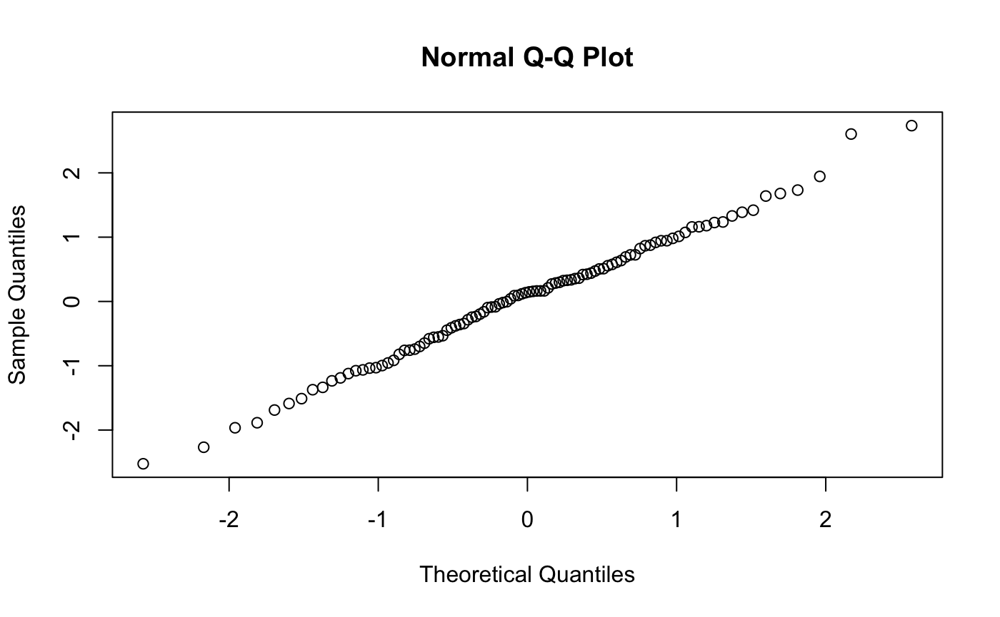
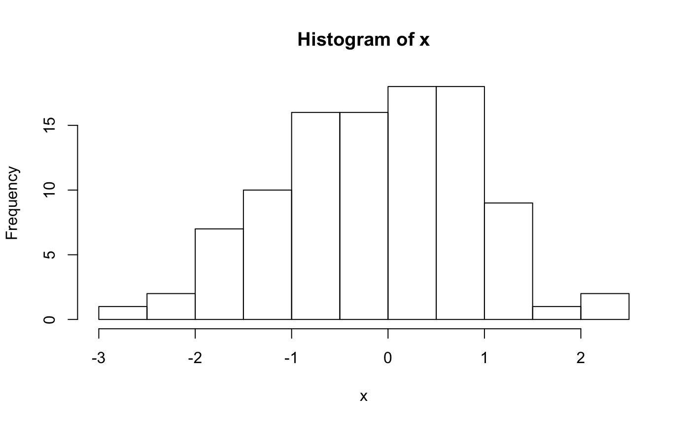
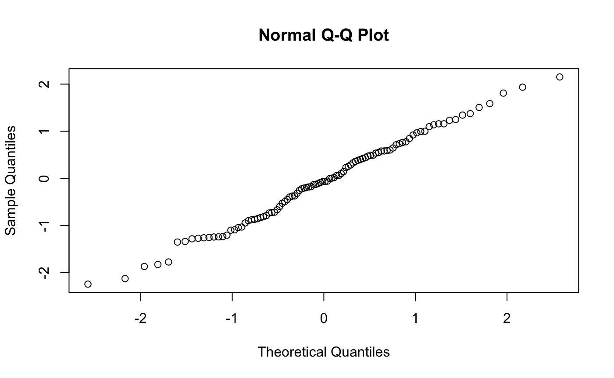

Week8_bonus_vignette.RmdThis Bonus Material provides some introductory worked examples for:
We will use the wolf SNP data (Schweizer et al., 2016) from the Week 11 worked example. The genetic data are individual-based, and are input as allele counts (i.e. 0/1/2) for each locus. We are using a randomly sampled subset of 10,000 single nucleotide polymorphism (SNP) markers from the full data set (which contains 42,587 SNPs).
All required packages should have been installed already when you installed ‘LandGenCourse’.
library(LandGenCourse) #library(microbenchmark) #library(profvis) #library(here) #library(readr) #library(data.table) #library(feather) #library(rio) #library(devtools) #library(parallel) #library(doParallel) #library(knitr) #library(compiler)
See also Chapter 5 in “Efficient R Programming”: https://csgillespie.github.io/efficientR/input-output.html
The file ‘myFile’ has 2MB and thus a reasonable size to compare the speed of different import and export functions.
Let’s benchmark the function read.csv used in Week 11. We use the function microbenchmark from the package microbenchmark to compare the speed of four different functions that can import a ‘csv’ file.
Note: Here we execute each function only once to save time, typically you would set times = 10 or so. Also, read_csv will print a warning about a missing column name. This is because the first column here contains the row names and does not have a column name. We’ll ignore this here, as we can use the first column as an example to compare how character data are being imported.
x = myFile microbenchmark::microbenchmark(times = 1, unit = "ms", read.csv(x), readr::read_csv(x), data.table::fread(x), rio::import(x))
## Warning: Missing column names filled in: 'X1' [1]## Parsed with column specification:
## cols(
## .default = col_double(),
## X1 = col_character()
## )## See spec(...) for full column specifications.## Unit: milliseconds
## expr min lq mean median uq
## read.csv(x) 1912.87664 1912.87664 1912.87664 1912.87664 1912.87664
## readr::read_csv(x) 2666.49306 2666.49306 2666.49306 2666.49306 2666.49306
## data.table::fread(x) 96.69952 96.69952 96.69952 96.69952 96.69952
## rio::import(x) 210.56506 210.56506 210.56506 210.56506 210.56506
## max neval
## 1912.87664 1
## 2666.49306 1
## 96.69952 1
## 210.56506 1Would it be faster if we first loaded the packages so that we could call the functions directly?
Note: you can list several independent commands on the same line by separating the with a semi-colon ‘;’. Also, the chunk setting message=FALSE here suppresses the warning message from read_csv.
library(readr); library(data.table); library(rio); library(microbenchmark) microbenchmark(times = 1, unit = "ms", read.csv(x), read_csv(x), fread(x), import(x))
## Warning: Missing column names filled in: 'X1' [1]## Unit: milliseconds
## expr min lq mean median uq max
## read.csv(x) 2015.71368 2015.71368 2015.71368 2015.71368 2015.71368 2015.71368
## read_csv(x) 2433.16677 2433.16677 2433.16677 2433.16677 2433.16677 2433.16677
## fread(x) 93.11483 93.11483 93.11483 93.11483 93.11483 93.11483
## import(x) 97.05789 97.05789 97.05789 97.05789 97.05789 97.05789
## neval
## 1
## 1
## 1
## 1Yes, the import was faster when the packages were already loaded.
Overall fread and import were in the order of 50 times faster than read.csv and read_csv! The two had practically the same speed, which is little surprising: for ‘csv’ files, import uses the function fread.
The beauty of import is that it can handle a wide range of file types (and the list keeps growing): csv, xls, xlsx, html, xml, json, feather, R, RData, rda, rds, psv, tsv, sas7bdat, xpt, sav, dta, xpt, por, rec, mtp, syd, dbf, arff, dif, fwf, csv.gz, CSVY, fst, mat, ods, yml, as well as Fortan files and clipboard imports (Mac and Windows). It recognizes the file type from the extension and uses an appropriate import function.
Note: there is also a fuction Import in the car package that similarly aims to provide an easy way to import various file formats. However, car::Import can be very slow (slower than ‘read.csv’), whereas rio::import is fast.
The functions differ not only in their speed but also in how they handle text data (character or factor?), missing values etc.
The first column in ‘myFile’ is an ID variable that should be used as row names. Let’s compare what the four methods did with this. The following code determines, for each import method, the class of the first column (IDs), and the class (or classes) of the resulting object.
Note: here we use double square brackets to subset the first column. Strictly speaking, we interpret ‘gen’ as a list of vectors. With a data.frame, we could also access the first column by gen[,1]. However, this would not return what we want for ‘tbl’ of ‘data.table’ objects. Always double check.
## [1] "factor" "data.frame"## Warning: Missing column names filled in: 'X1' [1]## [1] "character" "spec_tbl_df" "tbl_df" "tbl" "data.frame"## [1] "character" "data.table" "data.frame"## [1] "character" "data.frame"read.csv interprets any text as ‘factor’, the other functions use ‘character’ as default. Always double check!fread and import, you can set the argument ‘stringsAsFactors = TRUE’ to import all text data as factors.Binary files are not readable by users (or other software) but provide an efficient way of storing data. Let’s compare file size and input/output speed between text files (csv) and different types of binary files (RData, rds, feather). We’ll also export the ‘csv’ file so that we have it in the same location.
First we make sure an output folder exists in the R project:
if(!dir.exists(paste0(here::here(),"/output"))) dir.create(paste0(here::here(),"/output"))
gen <- import(myFile) export(gen, file.path(here::here(), "output", "gen.csv")) save(gen, file=file.path(here::here(), "output", "gen.RData")) saveRDS(gen, file=file.path(here::here(), "output", "gen.rds")) export(gen, file=file.path(here::here(), "output", "gen.feather"))
## Loading required namespace: featherc(csv=file.size(file.path(here::here(), "output", "gen.csv")), RData=file.size(file.path(here::here(), "output", "gen.RData")), rds=file.size(file.path(here::here(), "output", "gen.rds")), feather=file.size(file.path(here::here(), "output", "gen.feather")))/10^6
## csv RData rds feather
## 2.002491 0.351647 0.351620 4.759960Let’s benchmark the import again. We can use the function import for all of them. This is so fast that we can actually do it 10 times.
microbenchmark(times = 10, unit = "ms", csv= import(file.path(here::here(), "output", "gen.csv")), RData=import(file.path(here::here(), "output", "gen.RData")), rds=import(file.path(here::here(), "output", "gen.rds")), feather=import(file.path(here::here(), "output", "gen.feather")))
## Unit: milliseconds
## expr min lq mean median uq max neval cld
## csv 88.52406 91.25450 92.72855 92.97143 94.28121 96.19256 10 b
## RData 34.03750 37.02369 38.12625 38.42096 40.05130 41.41954 10 a
## rds 29.70359 31.19110 33.18528 34.03349 34.13177 35.58819 10 a
## feather 68.97891 70.16601 84.59937 78.24346 90.00650 125.92511 10 bLook at the column ‘mean’. Importing any of the binary files was at least twice as fast as importing the ‘csv’ file with the underlying function fread (which was already 50 times faster than read.csv).
Here’s my recommendation for saving R objects/data efficiently:
Note: the developer of feather does not recommend using it for long-term data storage since its stability with future updates to R or Python can’t be guaranteed: https://github.com/wesm/feather/issues/183
Why ‘rds’ and not ‘RData’? In practice, the main advantage of ‘rds’ is convenience when importing data.
# Let's delete any copy of 'gen' from the workspace: rm(gen) # Create object 'myData' in a single step from 'rds' file: myData <- readRDS(file.path(here::here(), "output", "gen.rds")) # Two steps when importing 'RData': first, load the stored object: load(file.path(here::here(), "output", "gen.RData")) # then assign to the new object 'myData': myData <- gen
Note that when you use load, the object name is NOT taken from the file name! This means that you may not know what object you are loading, if the object and file names are different.
Let’s test this. Here we save the object ‘gen’ in file ‘gen2.RData’, then load it.
# Export 'gen' to a file with a different name 'gen2.RData': save(gen, file=file.path(here::here(), "output", "gen2.RData")) rm(gen) # Load: load(file.path(here::here(), "output", "gen2.RData")) # What is the name of the loaded object? exists("gen")
## [1] TRUEexists("gen2")
## [1] FALSEWe see that an object ‘gen’ exists (TRUE), but an object ‘gen2’ does not exist (FALSE). The name of the loaded object is thus ‘gen’.
When you close RStudio, you may be asked whether you want to save your workspace. What happens when you do this, and should you do so?
Also, in the vein of reproducible research, do not save multiple copies of your data set. Instead:
A recommended way of keeping your code tidy is to write functions for anything you will do more than once.
myFunctions.R.source("myFunctions.R").To further speed up your code, you can compile your function with ‘cmpfun’:
myFunction <- function() { sum(rnorm(1000))/1000 } myFunction.cmp <- compiler::cmpfun(myFunction) microbenchmark::microbenchmark(myFunction(), myFunction.cmp())
## Unit: microseconds
## expr min lq mean median uq max neval cld
## myFunction() 53.582 54.381 67.54178 54.764 55.0215 1307.533 100 a
## myFunction.cmp() 53.589 54.411 54.86559 54.708 55.1725 59.309 100 aQuestion: Which of the following times are most different between the uncompiled and the compiled versions of this simple function?
In this case, compiling mainly reduced the duration of the longest 25% runs (with longer times than the 75% quartile), which brought down the mean processing time.
An simple way to identify parts of your code that may be slow is to:
To name a chunk, click on the wheel symbol at the top right of the grey chunk area and enter a one-word name.
Here’s an example of a named chunk: the name ‘myChunkName’ has been added in the curly brackets {r, myChunkName}. You can add a name manually in the same way.
More generally, this is where chunk options are added in the R Notebook. Here’s a long list of chunk options: https://yihui.name/knitr/options/
With the profvis package (from CRAN), we can provide code as an argument to the profvis function. Within the round brackets profvis(), use curly brackets to allow for multiple lines of code: profvis({ })
Note: here we use the chunk option ‘include=FALSE’ to suppress the output (figures created by the code), we only want to get the profile for the code.
The results will be opened in a ‘Profile’ tab. The upper part has again two tabs (the lower part is less intuitive to interpret, we’ll ignore it here):
qqnorm at the top of the list. You can click on the triangle before each line to see more detail.The results may depend on the speed of your computer. With my machine, I get a value of 20 for hist and another 30 for qqnorm, but nothing for the other lines. Check the sample interval at the bottom of the ‘Profile’ tab: time was estimated by observing every 10 milliseconds what the computer was doing. The other lines must have been too fast to be recorded.
RStudio has a built-in menu for profiling that does the same thing. Check it out:
x <- rnorm(100) until qqnorm(x)
The function profvis can also profile an entire R script. To try this, let’s first create a small R script with the four lines of code that we profiled above.
Note: Obviously, what we do here is not a recommended way of creating and saving an R script. Normally, you would write the code directly into a script file in the ‘Source’ tab in RStudio and save it with menu commands.
writeLines, we write each line into the file, but we need to wrap each line in quotes.file.show to show the file in a tab.Note: An ‘output’ folder should have been created already when you accessed this worked example with the Addin. We are not creating the folder with ‘dir.create’ because this would not work when knitting the R Notebook.
myPath <- file.path(here::here(), "output/myScript.R") fileConn <- file(myPath) writeLines(c("x <- rnorm(100)", "mean(x)", "hist(x)", "qqnorm(x)"), fileConn) close(fileConn) file.show(myPath)
Check the tab ‘R Information’, which should now display the content of the file ‘myScript.R’. Are the quotes still there?
Now we can pass the file to profvis:

Unfortunately, we can’t profile an entire R Notebook (as far as I know). However, we can extract the R code as a script file, then profile the script file.
The file ‘myNotebook.Rmd’ contains the same R code as our file ‘myScript.R’, but in the format of an R Notebook, with R markdown text (e.g. titles) and several chunks of code.
Note: With ‘file.show’, the Notebook is opened with a simple text editor (without the coloring etc.). Alternatively, you could run ‘file.edit’ to open it with the familiar RStudio editor.
inFile <- system.file("extdata", "myNotebook.Rmd", package = "LandGenCourse") file.show(inFile) #file.edit(inFile)
We can use the function ‘purl’ from the ‘knitr’ package to extract the R code from the R Notebook file ‘myNotebook.Rmd’:
outFile <- file.path(here::here(), "output/myNotebook.R") knitr::purl(inFile, output=outFile, quiet=TRUE)
## [1] "/Users/helene/Desktop/R_Github_projects/LandGenCourse/output/myNotebook.R"file.show(outFile)
Question: Compare the two files (they should be open, check the tabs of the source pane).
Now we can pass the file to `profvis’:

Question: Which lines of code took the longest to run in this example?
Now that we have a stand-alone R script ‘myScript.R’, we can run it from the command line in the terminal (shell). After navigating to the correct folder, type:
Rscript myScript.R
This will source the file and execute the R code.
If you want to run your code on a node or cluster, you may need to take this one step further and include the R code in a bash Rscript. In a bash script, you can add bash commands that govern resource use to submit a job to a node or cluster. Bash scripts are the way of giving instructions to the scheduler of the cluster (e.g. SLURM) for how to manage input and output files.
To execute our R script ‘myScript.R’ as a Bash script, we need to add a few lines.
#!/bin/bash that tells the computer that this is a Bash script, and where to find Bash. Note that here the hashtag symbol does NOT mean that the line is commented out (this line is Unix code, not R code).R --slave << EOF that declares the rest of the file (until EOF) as R code.EOF marker.Let’s modify the previous code and write it into a Bash file. As an additional challenge, our code contains two figures, which won’t be written anywhere unless we change the code to write them into a file:
par(mfrow=c(1,2)), we specify that the two plots should be plotted side-by-side. Then we create the plots.dev.off.Note: We use single quotes for the file name here, ‘my_plot.png’, as they are nested within a set of double quotes. R pretty much considers single and double quotes as synonyms, which allows us to nest them either way: ‘"“’ or”’’".
myPath <- file.path(here::here(), "output/myBashScript.sh") fileConn <- file(myPath) writeLines(c("#!/bin/bash", "R --slave << EOF", "x <- rnorm(100)", "mean(x)", "png('my_plot.png', height = 400, width = 800)", "par(mfrow=c(1,2))", "hist(x)", "qqnorm(x)", "dev.off()", "EOF"), fileConn) close(fileConn) file.show(myPath)
On Mac / Unix / Linux, this is straight-forward:
ls to list the content of the project folder.cd output to change directory to the subfolder ‘output’.ls to list the content of the ‘output’ folder. The Bash script ‘myBashScript.sh’ should be listed there.chmod +x myBashScript.sh to change file permission for the script../myBashScript.sh to execute the script.mean(x) is printed in the terminal, it should look like this: [1] -0.07731751.ls to list the content of the project folder. The graphics file ‘my_plot.png’ should now be listed.Use R again to open the graphics file (the code here first checks whether the file exists):
myPNG <- file.path(here::here(), "output/my_plot.png") if(file.exists(myPNG)) { file.show(myPNG) }
The example bash file and advice in this section have been provided by Hossam Abdel Moniem, thanks!
Here’s an annotated example of a bash file that contains instructions for submitting a job to a single node (a single machine with multiple/many cores).
Note: A copy of the file ‘BashExample.sh’ should also have been copied into the downloads folder inside your project folder.
writeLines(readLines(system.file("extdata", "BashExample.sh", package = "LandGenCourse")))
## #!/bin/bash
##
## #SBATCH --nodes=1 # Number of Nodes
## #SBATCH --mail-type=ALL # Mail events (NONE, BEGIN, END, FAIL, ALL)
## #SBATCH --mail-user=myEmail@gmail.com # Where to send mail
## #SBATCH --ntasks=1 # Run a single task
## #SBATCH --cpus-per-task=24 # Number of CPU cores per task
## #SBATCH --mem-per-cpu=8000 # allocated memory for the task
## #SBATCH -p nodename # name of cluster node
## #SBATCH --requeue # Allow the job to be requeued
## #SBATCH -e myJob.err # File to which STDERR will be written
## #SBATCH -o myJob.out # File to which STDOUT will be written
## #SBATCH -J myJob # Job name
##
## module load R/MS3.4.1 # call a preinstalled module(program) on the cluster
##
## Rscript connect_calc_25.R # Run the R script in bash
## Instead of including the R code directly in the bash file, the last line here executes an R script with the Rscript command.
Notice the second-last line. Obviously, on the node, R and any relevant packages need to be pre-installed. Different users may need different configurations (different packages or versions) installed, hence each installation has a name, which needs to be specified in the bash script.
Note: Make sure that all packages that you need (and their dependencies), as well as the package unixtools, have been installed on the node or cluster (i.e., they are part of the installation you will be using). Install unixtools with: install.packages("unixtools",,"http://rforge.net/")
Further reading:
If you use any R packages, load them at the beginning of your script file with library. Make sure the packages are installed on the system where you will be running the Bash R script.
A big issue with R is that package updates may make your code break. At least at the end of any project (such as the analyses for a manuscript), save your session information.
Here we use the function session_info from the devtools package (preferred over the R base function sessionInfo). We store the information as an object, ‘Session’, of class ‘session_info’ that has two list elements:
Platform:
Session <- devtools::session_info() Session$platform
## setting value
## version R version 3.6.3 (2020-02-29)
## os macOS Catalina 10.15.5
## system x86_64, darwin15.6.0
## ui X11
## language (EN)
## collate en_CA.UTF-8
## ctype en_CA.UTF-8
## tz Europe/Berlin
## date 2020-06-08Packages: here we display only the first six lines, as the list may be long.
head(Session$packages)
## package * version date lib source
## assertthat 0.2.1 2019-03-21 [2] CRAN (R 3.6.0)
## backports 1.1.7 2020-05-13 [2] CRAN (R 3.6.3)
## callr 3.4.3 2020-03-28 [2] CRAN (R 3.6.2)
## cellranger 1.1.0 2016-07-27 [2] CRAN (R 3.6.0)
## cli 2.0.2 2020-02-28 [2] CRAN (R 3.6.0)
## codetools 0.2-16 2018-12-24 [2] CRAN (R 3.6.3)
##
## [1] /private/var/folders/kz/fv8pzy0d3cl_mp3md294cvbh0000gn/T/RtmpwBqDUn/temp_libpath2c3f6a792c50
## [2] /Library/Frameworks/R.framework/Versions/3.6/Resources/libraryExporting the session information is a bit tricky because ‘Session’ is not in tabular format, and what we want to export is the formatted output, not the object itself.
Also, we will add a time stamp to the file name. This achieves two goals: avoid overwriting earlier files, and keep a record of the date of the session information.
capture.output: captures the output of a function (here: devtools::session_info())writeLines: writes the captured output into a file, here a text file.Sys.Date: returns the current date. Here we specify the format as “%Y-%m-%d”, i.e., ‘Year-month-day’.More advanced ways for handling the problem of package versions to make sure you can run your code in the future without compatibility issues include:
More on the topic: https://timogrossenbacher.ch/2017/07/a-truly-reproducible-r-workflow/
Check that Bash is installed and ready to use with RStudio:
If this does not work, try installing ‘Git for Windows’, which will also install Bash: http://neondataskills.org/setup/setup-git-bash-R
Here’s a detailed multi-part tutorial on running R from the command line, with R scripts and Bash R scripts, with some additional information on Windows:
Note that the following issues may create problems when developing Bash R scripts on Windows that you want to run e.g. on a Linux cluster or another Unix-type system;
Note: while this will run on a Windows without causing an error, it will only be faster on Mac / Unix.
With the package ‘parallel’, it is really easy to use all cores of your local machine (as long as you are on a Mac / Unix / Linux system). Let’s check the number of cores available:
library(parallel) detectCores()
## [1] 6Question: How many cores does your machine have?
Note: Here we check whether the operating system is ‘Windows’, in which case we set nCores = 1. This means that we will use all cores on Mac or Linux, but only one core on Windows. This is to avoid problems on Windows machines.
nCores <- detectCores() if(Sys.info()[['sysname']]=="Windows") nCores = 1 nCores
## [1] 6lapply (and related functions).lapply by mclapply (and related functions). Use the argument mc.cores=detectCores() to automatically detect the number of cores in your machine.x <- gen[,-1] m1 <- lapply(x, mean, na.rm=TRUE) m2 <- mclapply(x, mean, na.rm=TRUE, mc.cores=nCores)
Let’s benchmark four ways of calculating the mean of each column in our example data set ‘gen’ with 94 rows and 10,000 columns (SNPs):
colMeans from base R.for loop.lapply
mclapply.method1 <- function(x) {colMeans(x, na.rm=TRUE)} method2 <- function(x) {for(i in 1:ncol(x)) mean(x[,i], na.rm=TRUE)} method3 <- function(x) {lapply(x, mean, na.rm=TRUE)} method4 <- function(x) {mclapply(x, mean, na.rm=TRUE, mc.cores=nCores)} microbenchmark::microbenchmark(times = 10, unit = "ms", method1(x), method2(x), method3(x), method4(x))
## Unit: milliseconds
## expr min lq mean median uq max neval
## method1(x) 34.18860 35.27970 47.75938 43.34537 56.22047 77.61666 10
## method2(x) 192.65406 204.76664 230.24623 227.39515 252.35063 281.24341 10
## method3(x) 39.42376 44.81886 57.42980 55.97525 61.76054 93.66116 10
## method4(x) 26.31976 33.11400 35.19358 35.10938 39.02073 42.11038 10
## cld
## a
## b
## a
## aQuestion: Compare the mean
mclapply faster than lapply in this example?Note: Obviously you might only expect to see a gain in speed if nCores > 1.
On Windows, it is easier to use the package ‘doParallel’ with the function ‘foreach’. Here’s a detailed introduction: http://127.0.0.1:26758/help/library/doParallel/doc/gettingstartedParallel.pdf.
makeCluster to specify the number of cores to be used. The default is half the number of cores.cl.registerDoParallel. If you omit this step, the code will not use parallel computing.The following code is commented out to avoid problems when knitting the Notebook. You may uncomment and run it.
library(doParallel)
## Loading required package: foreach## Loading required package: iterators#cl <- makeCluster(2) #cl #registerDoParallel(cl)
Now we adapt the code in two steps:
foreach than with for, as we use a pipe-like syntax with %do%, which means, for each value of i, do the following.%do% is only a pipe operator, it does not result in parallelisation yet.%do% by %dopar%.m1 <- for(i in 1:ncol(x)) mean(x[,i], na.rm=TRUE) m2 <- foreach(i = 1:ncol(x)) %do% (mean(x[,i], na.rm=TRUE)) #m3 <- foreach(i = 1:ncol(x)) %dopar% (mean(x[,i], na.rm=TRUE))
Let’s benchmark this again. We’ll only do 3 replicates this time (uncomment before running this code).
#method1 <- function(x) {colMeans(x, na.rm=TRUE)}
#method2 <- function(x) {for(i in 1:ncol(x)) mean(x[,i], na.rm=TRUE)}
#method3 <- function(x) {lapply(x, mean, na.rm=TRUE)}
#method4 <- function(x) {mclapply(x, mean, na.rm=TRUE, mc.cores=nCores)}
#method5 <- function(x) {foreach(i = 1:ncol(x)) %do% (mean(x[,i], na.rm=TRUE))}
#method6 <- function(x) {foreach(i = 1:ncol(x)) %dopar% (mean(x[,i], na.rm=TRUE))}
#microbenchmark::microbenchmark(times = 3, unit = "ms",method1(x), method2(x), method3(x), method4(x), method5(x), method6(x))Whether parallelisation is faster depends on the type of task and on your system. In this case, both versions that used parallelisation were actually slower than the sequential code (at least on my system).
Of course, this will not always be the case, it may depend on: